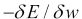
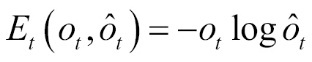
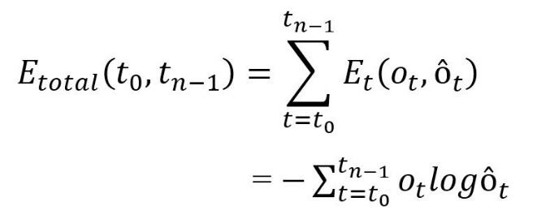
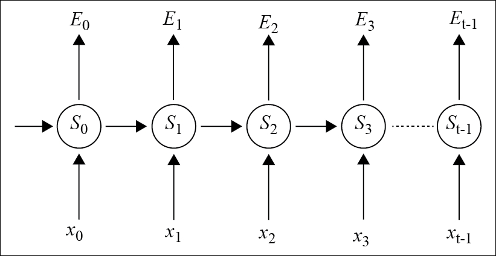
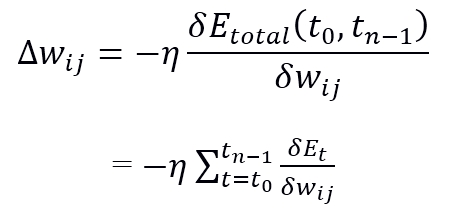

You have already learnt that the primary requirement of RNNs is to distinctly classify the sequential inputs. The backpropagation of error and gradient descent primarily help to perform these tasks.
In case of feed forward neural networks, backpropagation moves in the backward direction from the final error outputs, weights, and inputs of each hidden layer. Backpropagation assigns the weights responsible for generating the error, by calculating their partial derivatives:

However, a RNN, without using backpropagation directly, uses an extension of it, termed as backpropagation through time (BPTT). In this section, we will discuss BPTT to explain how the training works for RNNs.
The backpropagation through time (BPTT) learning algorithm is a natural extension of the traditional backpropagation method, which computes the gradient descent on a complete unrolled neural network.
Figure 4.5 shows the errors associated with each hidden state for an unrolled RNN. Mathematically, the errors associated with each state can be given as follows:

where ot represents the correct output, and ôt represents the predicted word at time step t. The total error (cost function) of the whole network is calculated as the summation of all the intermediate errors at each time step.
If the RNN is unfolded into multiple time steps, starting from t0 to tn-1, the total error can be written as follows:


Figure 4.5: The figure shows errors associated with every time step for a RNN.
In the backpropagation through time method, unlike the traditional method, the gradient descent weight is updated in each time step.
Let wij denote the connection of weight from neuron i to neuron j. η denotes the learning rate of the network. So, mathematically, the weight update with gradient descent at every time step is given by the following equation:
